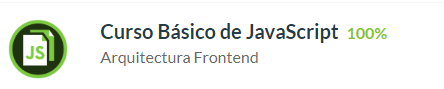
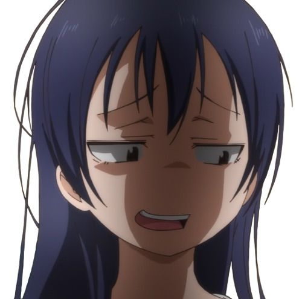

So, this is my new top play, a 2⭐ map but SS.
I want to take time with each course, no rush no speedruning,
even if i can approve the exam first try without the course that isn't the idea.

The courage was because i was afraid to send a simple message to 🌺
while she is busy, she gets angry easily and then bullies me (?, anyways,
there are 5 days left for Valentine's Day
and i don't know what to give her 🐌
